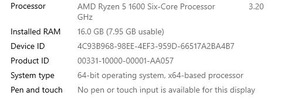
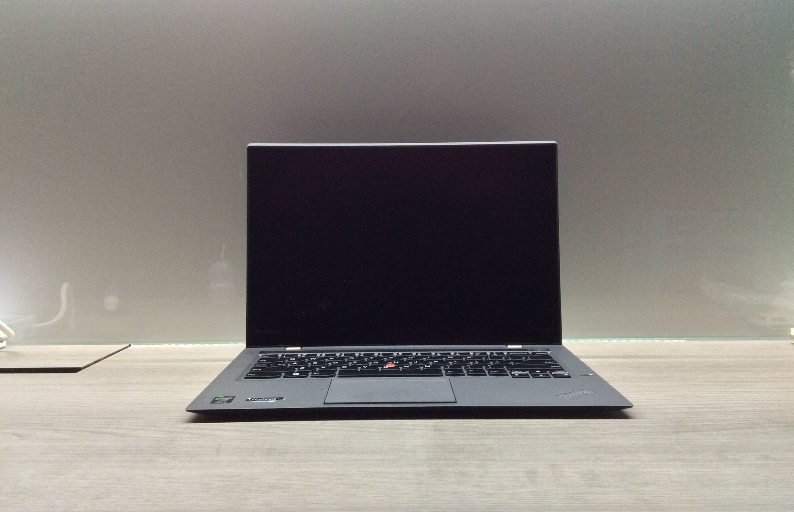

Ultrabooks have emerged as a popular choice for individuals seeking a perfect balance between performance and portability. These sleek and lightweight laptops offer a compelling solution for users who require powerful computing on the go. However, with the multitude of options available in the market, selecting the right ultrabook can be a daunting task. To help you make an informed decision, here are seven essential tips for choosing the right ultrabook for your portable computing needs.
Table of Content
______________________________________________________________________________
______________________________________________________________________________
1. Consider Your Usage Requirements:
Before diving into the world of ultrabooks, assess your computing needs. Are you a frequent traveler who needs a long-lasting battery? Do you require a powerful processor for resource-intensive tasks like video editing or gaming? Understanding your usage requirements will guide you towards the right combination of specifications, ensuring your ultrabook aligns with your daily tasks.
2. Prioritize Portability:
One of the key advantages of ultrabooks is their portability. Consider the weight and dimensions of the ultrabook to ensure it meets your mobility requirements. If you are always on the move, a lightweight and slim design will be crucial for your comfort. Look for models with durable materials that can withstand the rigors of daily commuting.
3. Battery Life Matters:

The longevity of the battery is a critical factor for those who need their ultrabook to last throughout a busy day. Look for ultrabooks that offer all-day battery life, typically around 8-12 hours. Keep in mind that battery life can vary based on usage, so choose a model that aligns with your daily computing habits.
4. Display Quality and Size:

Cheon Fong Liew, CC BY-SA 2.0, Via Flickr
The display is your primary interface with the ultrabook, so prioritize screen quality and size based on your preferences. A high-resolution display with vibrant colors and good viewing angles can enhance your overall computing experience. Consider whether you prefer a compact 13-inch screen for increased portability or a larger 15-inch display for improved productivity.
5. Performance Specifications:
The performance of an ultrabook depends on factors such as the processor, RAM, and storage. Choose a model with a processor that suits your performance needs, whether it's an Intel Core i5 for general use or a more powerful i7 for demanding tasks. Opt for sufficient RAM (at least 8GB) and consider the type of storage (SSD for faster performance) based on your requirements.
6. Connectivity Options:

Marco Verch Professional, CC BY-SA 2.0, Via Flickr
Evaluate the connectivity options offered by the ultrabook. Ensure it has an adequate number of USB ports, HDMI or Thunderbolt for external displays, and a reliable Wi-Fi connection. If you rely on specific peripherals or accessories, compatibility with these devices is crucial for a seamless computing experience.
7. Build Quality and Durability:
Elroygoh, CC BY-SA 4.0, via Wikimedia Commons
A well-built ultrabook not only enhances its aesthetic appeal but also contributes to its durability. Consider the build materials, keyboard quality, and overall construction. A backlit keyboard, precision touchpad, and a robust chassis can significantly improve your daily usability and overall satisfaction with the ultrabook.
Conclusion
Choosing the right ultrabook involves a careful consideration of your specific needs and preferences. By focusing on factors such as performance, portability, battery life, display quality, connectivity, and build quality, you can narrow down your options and find an ultrabook that perfectly complements your portable computing requirements. Keep these tips in mind, and you'll be well on your way to selecting the ideal ultrabook for a seamless and efficient computing experience on the go.


{kind=link}